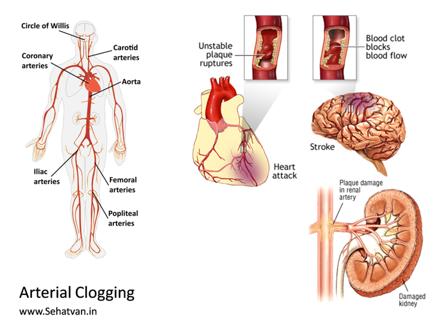
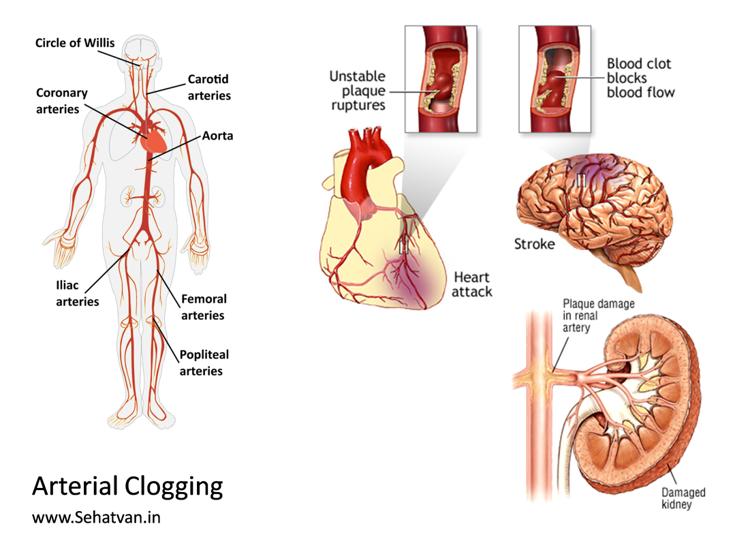

Take health, drop diseases
Namaste!
 Every living being is capable of self-recovery. Lifestyle issues weaken our health recover
capacity and our health-span.
Health-span is the period in a person's life without major illnesses.
Sehatvan Aashram is carefully designed to reboot mental and physical fitness.
Every living being is capable of self-recovery. Lifestyle issues weaken our health recover
capacity and our health-span.
Health-span is the period in a person's life without major illnesses.
Sehatvan Aashram is carefully designed to reboot mental and physical fitness.
Forest Therapy Module:
Cardiovascular Health
Recommended Duration:
A) At Sehatvan (Forest Protocol):
10 to 20 days
+
B) Home Protocol:
3 to 4 weeks (1 or 2 followup visits/calls)
Fee Contribution:
Indian Participants:
Rs 20,000
International Participants:
USD 350
Refund Policy:
Cancellation (only upto first 2 days of participation)
Rs. 5000/person is deducted and the balance is refunded.
Change of date:
subject to availability and updated fees.
Cancellation (only upto first 2 days of participation)
Rs. 5000/person is deducted and the balance is refunded.
Change of date:
subject to availability and updated fees.
Know More
What are Cardiovascular Diseases?
Therapeutic Protocol
Cardiovascular Diseases (CVD) are number one cause of human death; around 32% people die
this way globally. In earlier times this used to be mainly the disease of cold countries,
and of elderly and rich people, now it’s affecting to almost everyone, and in younger times.
Three main elements of CVD are - sticky blood, vascular rigidity and arterial clogging.
Blood, mainly because of improper hydration or consumption of diuretics like tea or coffee and because of aging, becomes thick and stick and faces resistance in circulation.
Nature has designed our blood vessels being flexible in nature so that they could maintain appropriate blood pressure despite of fluctuating blood demands. If pressure drops below a certain level then blood fail to reach to extremities, and if it shoots up too much then it leads of leakage or hemorrhage. Vascular rigidity is an outcome of aging process and some people can age much faster than others.
The third and most talked issue is arterial clogging or coronary blockades. Because of plaque formation our arteries get clogged, here also aging plays a role but there are other factors too that can cause the vessels becoming clogged even in younger age. Arterial clogging is also known as atherosclerosis and inflammatory factors play a pivotal role. The plaque could be comprised of cholesterol, fat, calcium and other stuff.
Stenting and bye-pass and open heart surgeries are currently quite popular as an immediate solution; however, these have huge limitations - not only in terms of the risks and cost involved, but also because of the outcome. Many studies have revealed that plaque removing cardiac surgeries are of only of placebo value, the reasons being – 1) clogging is not as localized as is perceived, and 2) most stents, being foreign to the body, further attract and accelerate the instances of clogging. People having clogging tendencies will have clogs all around their vasculature (of varying magnitude) and not only in one or two of the arteries and loci. Atherosclerosis in brain leads to stroke and in kidneys the kidney damage. Henceforth, stenting and related procedure are of only little and temporary value. The effective way is cleansing the whole cardiovascular system.
 One more thing that human beings are hugely missing is the role of sunshine in health. Life on earth has a vital connection with the sun and all organisms have multitude relationships with it. Besides many other things, sun exposure (on skin) converts cholesterol to vitamin D, and it is because of our dissociation with the sun that most humans have become excessive in cholesterol and deficient in vitamin D. Hypercholesterolemia is a factor for plaque formation so is the vitamin D insufficiency. In the situation of vitamin D insufficiency, calcium starts moving from bones to causing the calcification of the vessels, the second biggest cause of clogging.
Three main elements of CVD are - sticky blood, vascular rigidity and arterial clogging.
Blood, mainly because of improper hydration or consumption of diuretics like tea or coffee and because of aging, becomes thick and stick and faces resistance in circulation.
Nature has designed our blood vessels being flexible in nature so that they could maintain appropriate blood pressure despite of fluctuating blood demands. If pressure drops below a certain level then blood fail to reach to extremities, and if it shoots up too much then it leads of leakage or hemorrhage. Vascular rigidity is an outcome of aging process and some people can age much faster than others.
The third and most talked issue is arterial clogging or coronary blockades. Because of plaque formation our arteries get clogged, here also aging plays a role but there are other factors too that can cause the vessels becoming clogged even in younger age. Arterial clogging is also known as atherosclerosis and inflammatory factors play a pivotal role. The plaque could be comprised of cholesterol, fat, calcium and other stuff.
Stenting and bye-pass and open heart surgeries are currently quite popular as an immediate solution; however, these have huge limitations - not only in terms of the risks and cost involved, but also because of the outcome. Many studies have revealed that plaque removing cardiac surgeries are of only of placebo value, the reasons being – 1) clogging is not as localized as is perceived, and 2) most stents, being foreign to the body, further attract and accelerate the instances of clogging. People having clogging tendencies will have clogs all around their vasculature (of varying magnitude) and not only in one or two of the arteries and loci. Atherosclerosis in brain leads to stroke and in kidneys the kidney damage. Henceforth, stenting and related procedure are of only little and temporary value. The effective way is cleansing the whole cardiovascular system.
 One more thing that human beings are hugely missing is the role of sunshine in health. Life on earth has a vital connection with the sun and all organisms have multitude relationships with it. Besides many other things, sun exposure (on skin) converts cholesterol to vitamin D, and it is because of our dissociation with the sun that most humans have become excessive in cholesterol and deficient in vitamin D. Hypercholesterolemia is a factor for plaque formation so is the vitamin D insufficiency. In the situation of vitamin D insufficiency, calcium starts moving from bones to causing the calcification of the vessels, the second biggest cause of clogging.
Protocol developed at Sehatvan for cardiovascular health has five steps: 1 pre-forest, 3 in-forest and 1 post-forest.
Pre-Forest Protocol
Blood donation is an excellent and instant approach to improving cardiovascular health. In fact, we have been designed to have been losing blood occasional, but now-a-days men and menopaused women do not lose blood that frequently. When one loses blood, there is formation of new and better blood, and thereby blood donation or bloodletting helps improvise blood quality.
Those who are not anemic should actually regularly donate blood a couple of time every year to boost their cardiovascular health. People coming to Sehatvan cardiovascular health are advised to donate blood before coming here.
Forest Protocol
Those who are not anemic should actually regularly donate blood a couple of time every year to boost their cardiovascular health. People coming to Sehatvan cardiovascular health are advised to donate blood before coming here.
Sehatvan protocol is comprised of 3 steps:
Supplementary Home Protocol
-
Sun, Sweat & Cardiac for (5 days): Sun, Sweat & Cardiac (SSC) has tremendous potential to improvise cardiovascular health. Exposure to sun helps convert excess cholesterol into vitamin D, and thereby, it directly reduces the propensity of plaque formation. Apart from this, it lifts the mood and offers psychological advantage too. Sweat helps eliminate excessive salts, actually those who aren’t sweating shouldn’t consume salt. Removal of excess salt brings the blood pressure of hypertensive people down.
Cardiac workout i.e. strenuous physical activity like watering the plants with bucket or digging strengthens the cardiac muscles. However, people should be cautious with the extent of intensity and it should be increased slowly. Adequate hydration is also essential during the whole SSC regime. -
Autophagic cleansing and rejuvenation (5-10 days): In autophagy mode body starts eating its own all extra, toxic or nonessential things, and plaques are completely non-essentials; hence, authophagy is likely to lead to disappearance of plaques from whole body and for forever. Autophagy also has rejuvenative power and leads to formation of new blood and new blood vessels wherever required.
Since autophagy involves detox, persons may experience vivid symptoms ranging from fever to diarrhea or vomiting to skin rashes depending upon the toxicities stored in them; and hence, autophagy should never be attempted in a city like toxic or non-supportive environment.
This should be treated as a major intervention in one’s life and taken only in a pristine and supportive environment. At Sehatvan we recommend water only fasting with moderate SSC for cardiovascular health. - Re-strengthening (5 days): Rushing back to the food and toxic environment immediately after the autophagy is a horrible idea. It should be stepped-in in a gradual manner; and hence, one must spend a few more days in supportive and pristine environment before moving back to the city. This is a called re-strengthening phase, and under this people return back to a healthy diet in a gradual manner. Also, physical labor is enhanced from mild to moderate to make-up for any muscle loss.
Ultimately people got to live in cities as neither forest can afford internalizing many people, nor most people can afford living in a forest; hence, howsoever toxic it may be, cities are the realities. Following a modest SSC lifestyle and healthy diet for next 3-4 weeks helps further boost the cardiovascular health.
Daily/ Hourly Protocols
Protocol for the first 10 days is standard for everyone and is available at www.sehatvan.in in the form of a booklet. Subsequent protocols are tailor made to each individual’s needs and situations.
Please send an email to sehatvan@gmail.com to receive.
PRECAUTION
Please send an email to sehatvan@gmail.com to receive.
The protocol should be undertaken only under medical supervision as people under medication require continuous dosage adjustments. Also, those carrying toxicities may experience detox symptoms like vomiting, diarrhea, skin rashes, body ache, fever etc during autophagy phase. Since Sehatvan is not a medical institution, we recommend people coming here keeping in touch with their doctor.
Other Questions
What is Forest Therapy?
This is a healing process based on strengthening and calming, cleansing and rejuvenating the
body. It
helps in
rebooting the self-recovery system and also facilitates reversing of diseases.

Who can do it?
This programme is suitable for healthy people as well as those suffering from diseases.
Healthy
people can benefit by increasing their stamina and health-span while people suffering from
ailments can reverse their diseases.
Who cannot do this?
Those who need constant medical attention, who have difficulty in walking and do not enjoy
doing
their own work.
Which diseases is the process helpful in?
Diabetes, BP(Hypertension), Heart issues, Stress, Thyroid, Obesity(weight-loss),
Cancer(early stage
& prevention), PCOD and other lifestyle and autoimmune diseases.
What is the procedure? How long does it take?
This process of Forest Therapy has been developed by health scientist Dr. Vipin Gupta and is
based on
CNA (Community-living, Nature and Autophagy) which can be done at Sehatvan. The duration
progresses
differently for everyone, based on your current health and healing ability.
About Dr. Vipin Gupta

A drug discovery scientist, he spent over two decades developing new medicines for various pharma companies in India, Europe and America. In 2011 he was invited by The Royal Swedish Academy of Sciences at Nobel Museum, Stockholm to represent Southeast Asia. He co-founded a research publishing company ‘Inventi’ in 2010 and a self-healing space ‘Sehatvan’ in 2016.
A drug discovery scientist, he spent over two decades developing new medicines for various pharma companies in India, Europe and America. In 2011 he was invited by The Royal Swedish Academy of Sciences at Nobel Museum, Stockholm to represent Southeast Asia. He co-founded a research publishing company ‘Inventi’ in 2010 and a self-healing space ‘Sehatvan’ in 2016.
‘Sahaj Sehat’ series carries the viewpoints of how body’s auto-repair capabilities can make use of medicines redundant in lifestyle diseases.